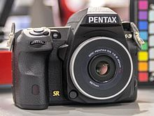
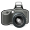

Pentax K-3
|  | |
| Type | Digital single-lens reflex camera |
|---|---|
| Lens | Interchangeable Pentax KAF3 and KAF2 mount compatible with Pentax auto-aperture lenses; older lenses supported in stop-down metering mode |
| Sensor | APS-C 23.7 × 15.7 mm CMOS sensor |
| Maximum resolution | 24.71 megapixels (6016×4000) |
| Recording medium | 2 slots for SD/SDHC/SDXC; dedicated Flucard for wireless tethering available |
| Flash | Onboard pop-up flash; hot shoe for P-TTL flash units with high-speed sync support; PC socket for studio flashes; 1/180 s X-sync speed |
| Shutter speed range | 1/8000 – 30 s, Bulb |
| ASA/ISO range | ISO 100–51,200 in 1, ½, or ⅓ EV steps |
| Exposure metering | 86,000-pixel RGB metering sensor with Real-Time Scene Analysis System |
| Exposure modes | Green (fully automatic), program, aperture priority, shutter priority, sensitivity priority, aperture and shutter priority, manual, bulb, X-sync shutter speed, three User presets. |
| Metering modes | Multi-segment, Center-weighted, Spot |
| Continuous shooting | Up to 8.3 fps for 60 JPEG or 23 RAW images |
| Viewfinder | Eye-level pentaprism, 100% coverage, 0.95× magnification |
| Rear LCD monitor | 3.2″, 1,037,000 dots (720×480 RGB pixels) |
| Battery | D-LI90 lithium-ion rechargeable battery |
| Optional battery packs | D-BG5 battery grip accepts additional D-LI90 battery or 6 AA (R6) batteries |
| Dimensions | 131×97×73 mm |
| Weight | With battery: 800 g (28 oz) Without battery: 715 g (25.2 oz) |
| Made in | |
The Pentax K-3 is a 24-megapixel Pentax high-end digital single-lens reflex camera with an APS-C sensor, announced on 7 October 2013.[1] The Pentax K-3 is the successor to both the K-5 II and K-5 IIs models, which have a 16 megapixel sensor. The K-5 II (and most other cameras of its time) had an optical low pass filter or anti-aliasing (AA) filter that can prevent the appearance of moire patterning on the captured image. This filter reduces the sharpness of the image, so Pentax also produced the K-5 IIs which omitted this filter. In the K-3, Pentax obviated the need for providing two separate models by including a selectable AA filter "simulator". This mechanism vibrates the sensor when switched on, slightly blurring the image in a way that replaces the function of the optical AA filter, providing the same benefit as the filter in the K-5 II and other cameras with an optical AA filter. When the AA simulator is disabled, the sensor records a sharper image, as in the K-5 IIs.
The Pentax K-3 was also the first camera to support the Pentax FluCard for wireless remote capture and download of images.
The Pentax K-3 is a mid-size DSLR with a weather-sealed magnesium alloy body, and is priced at a relatively similar level to the newer upper-entry level Nikon D5500 DSLR[2] and $300 cheaper than the newer mid-range Nikon D7200 DSLR. The Pentax K-3 was ranked #2 in a comparison of mid-size DSLR class, was class-leading in image quality for portrait, street, daily and landscape photography, and ranked only slightly lower for sport photography. In-body stabilization also gives the Pentax K-3 an advantage, but its 800-gram weight is slightly more than average for a mid-size DSLR.[3]
Contents
[hide]Limited editions[edit]
When the K-3 was originally announced, Ricoh made available a Premium Silver Edition that included the camera body and battery grip with a silver paint finish as well as an exclusive red leather neck strap. According to Ricoh, this would match the silver versions of Pentax HD DA Limited lenses.[4] In July 2014, Ricoh announced the Prestige Edition, which included a K-3 and battery grip in a "gunmetal gray" finish as well as two batteries and black artificial leather neckstrap,[5] embossed with the lettering "2014 TIPA BEST DIGITAL SLR EXPERT" and the Pentax K-3 logo.[6] Each edition was limited to 2000 units.[4][5]
Awards[edit]
The Pentax K-3 has won the TIPA Award "Best Digital SLR Expert" for 2014,[7] and the EISA Photo Award 2014-2015 for Best Advanced DSLR.[8]
References[edit]
- Jump up ^ "Ricoh announces Pentax K-3 24MP DSLR with selectable low pass filtering". 2013-10-07. Retrieved 2013-10-13.
- Jump up ^ "Nikon D5500 vs Pentax K-3". Retrieved April 26, 2015.
- Jump up ^ "Pentax K-3 vs Nikon D7200". Retrieved April 26, 2015.
- ^ Jump up to: a b http://www.dpreview.com/articles/8357047859/ricoh-announces-pentax-k-3-24mp-dslr-with-optional-low-pass-filtering
- ^ Jump up to: a b http://www.dpreview.com/articles/1093365305/ricoh-announces-pentax-k-3-prestige-edition
- Jump up ^ http://www.ubergizmo.com/2014/07/ricoh-unveils-pentax-k-3-prestige-edition/
- Jump up ^ http://www.tipa.com/english/award-details.php?iId=3634&sAward=Best%20Digital+SLR++Expert
- Jump up ^ http://www.fotomagazin.de/index_dyn.php?we_objectID=7953&pid=0
External links[edit]
| Wikimedia Commons has media related to |
Official page[edit]
- Pentax K-3 - Pentax US
Reviews[edit]
- Digital Camera Review
- Imaging Resource
- Review by Ben Evans
- Video review by Spyros Heniadis (16:29 duration)
| [show] Pentax digital interchangeable lens camera timeline |
|---|
|  | This camera-related article is a stub. You can help Wikipedia by expanding it. |
{kind=link}